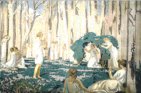

 Image 11
Orpheus and Eurydice
Maurice Denis
France, 1870-1943
1910
Oil on linen
45 7/16 x 65 3/16 inches
The Putnam Dana McMillan Fund 68.1
Key Ideas
The Greco-Roman story of Orpheus (ORR-fee-us) tells of the
power of poetry and music to enchant all natural things.
Orpheus and his mythology appealed to the SYMBOLIST artists who sought
an ideal synthesis of music, poetry, and the visual arts.
The colors, lines, and forms in Maurice (more-EES) Denis's (day-NEE)
painting of Orpheus and Eurydice (you-RID-uh-see) convey a sense of rhythm
and harmony.
Story
Orpheus was the son of the god Apollo and Calliope (kuh-LIE-uh-pee),
the muse of epic poetry. Orpheus became a great musician. His voice was more
melodious than any other mortal's. The songs he sang and the tunes he played
on his lyre enchanted gods, mortals, and beasts alike; even stones and trees
came to him when he played.
Orpheus married the beautiful nymph Eurydice. But on their wedding day a
poisonous snake bit her and she died. Desperate to be reunited with his
beloved Eurydice, Orpheus journeyed to the Underworld to beg the king and
queen there to return Eurydice to him. As he sang his plea and played his
lyre, even the cold spirits of the Underworld wept. The king and queen
granted the couple permission to leave together on the condition that
Orpheus must not look back at Eurydice until they were both completely out
of the Underworld. Silently they made the arduous, dark climb. But at the
opening to the world, Orpheus, in his love for Eurydice, turned and looked
at her. She slipped back into the darkness.
Orpheus returned to his world, where his music became even more moving,
reflecting his suffering over the loss of Eurydice. He wandered despondent
through the woods and refused the love of other women. This so angered the
local women that they tore Orpheus to pieces and tossed his head and lyre
into the river. Still singing out the name of Eurydice, his head floated out
to sea. Orpheus's spirit returned to the Underworld, where he was happily
reunited with Eurydice.
Background
Orpheus
Although many well-known ancient writers wrote about Orpheus, his
history is muddled. By the 5th century B.C., the Greeks considered Orpheus the founder of an early religion and a
religious teacher. His mythology and fame as a singer derived from sacred
texts ascribed to him.
The Orpheus myth warns that death is inevitable, that even the power of song
cannot save one from death. But it also reconciles life and death,
suggesting that death is actually the beginning of a new life.
Since ancient times, Orpheus has represented the supreme power of poetry and
music to enchant all natural things. It was Orpheus the musician who
attracted the painter Maurice Denis.
Maurice Denis and the Symbolists
Early in his career, Denis associated with a group of
artists called Symbolists. The Symbolists challenged
the value of naturalism as an artistic goal. Instead, they used
bright and often arbitrary colors, curving lines, flat forms, and unusual
compositions to transform the real world into personal symbolic statements.
The Symbolists sought an ideal synthesis of the arts. Maurice Denis's
paintings incorporated elements and themes from the other arts; he believed,
for example, that painting could have musical qualities and that color,
line, and form were inherently musical and could convey a sense of rhythm
and harmony. Denis collaborated with writers, poets, composers, performers,
and critics. Among Denis's many interdisciplinary projects was a 1912-13
series of paintings on the history of music, including an image of Orpheus,
in the Theatre des Champs-Elysees (tay-AH-truh day SHANZ-ay-leez-ay) in
Paris.
Orpheus and his mythology represented the vital synthesis of poetry, music,
and the other arts, so important to Denis and his Symbolist colleagues.
Orpheus's reputation as a religious and artistic teacher also endeared him
to artists of this era who, like Denis, were interested in the spiritual
qualities of art.
Orpheus and In the painting Orpheus and Eurydice Denis uses rich and pale Eurydice greens, purples, browns, whites, and blues to evoke an idyllic
moment of humans in harmony with nature. It is a beautiful spring day with a
bright blue sky, fluffy white clouds, and a blanket of lush green and
lavender flowers. No single figure dominates. Even Orpheus does not take
center stage; rather, he stands to the right, playing his lyre and charming
all who have gathered to hear him. He wears a laurel crown, a cherished
prize in ancient Greece, awarded to the best poets and musicians.
Denis believed that a truly harmonious painting was one that achieved a
balance between nature and imagination. Artists had to be able to rationally
organize their emotional responses to nature in their art. He achieves that
balance in this painting. Orpheus's white-clad audience, from the frontmost
reclining woman to the embracing couple on the right, forms an open-ended
circle around the musician. By gradually reducing the size of the figures,
Denis guides the viewer back into the forest. Kneeling beneath an arched
bower in the painting's MIDDLEGROUND, Eurydice raises her hands in approval
of Orpheus's song. The sequence of figures creates a gentle rhythm that
carries through the picture. The vertical trees impose a subtle restraint on
the scene, though even they, like the standing Orpheus, curve gently,
contributing to the overall harmony.
Denis's harmonious painting only hints at the tragedy that would befall the
lovers. By isolating Eurydice under the hedge, he physically separates her
from all of the other figures.
Discussion Questions
Look 1. Tell the story of Orpheus and Eurydice. Where is Orpheus in this painting? (MIDDLEGROUND, just right of center.) How do you know? (He's playing a musical instrument called a lyre.)
Where is Eurydice in this painting? (Middleground, left of center, kneeling
under an arched hedge.) How do you know? (She is separated from others by a
green arch.) Does Denis give us any clues about what will happen to these
lovers? (Eurydice appears under green foliage while all other figures lounge
on top of the green lawn, suggesting perhaps her Underworld fate.)
2. What kind of lines do you see in this painting? (Curved.) Describe the
curved lines: Are they sharp? Hairpin? Gentle? Wavy? Flowing? Long? Short?
Continuous?
3. What colors did Denis use in this painting? Name them. (White, green,
purple, brown, and blue.) What do green, purple, and blue have in common?
(They all contain the color blue!) Rather than use colors as they would
appear in nature, Denis used colors as SYMBOLS to create a personal
statement. What kind of a statement do you think Denis was making when he
painted Orpheus and Eurydice? Loud? Quiet? Happy? Angry? Excited? Calm?
4. Beginning with the two reclining women in the FOREGROUND, follow with
your eyes the ring of figures surrounding Orpheus. Is there an open spot for
you to join this group? Where? (Right lower corner.)
5. The FOREGROUND in a painting is the space closest to the viewer, the
MIDDLEGROUND is the space below the horizon line, and the BACKGROUND is very
near the horizon line and/or above it. What do you see in the foreground of
this painting? (Two reclining female figures.) What do you see in the
middleground? (Green lawn, more figures.) What do you see in the background?
(Figures and trees.) What common elements unite the foreground,
middleground, and background in this painting by appearing in all three
places? (Figures, curved lines, and color.)
Think 1. Maurice Denis was associated with a group of artists called the
SYMBOLISTS. The Symbolists sought an ideal synthesis of all the arts - visual
arts, music, poetry, theater. Why do you think Denis would be interested in
the story of Orpheus and Eurydice? (Orpheus represents the supreme power of
music and poetry to enchant all natural things.)
2. Denis believed that color, line, and form had musical qualities and could
convey a sense of rhythm and harmony. He used these principles when he
painted Orpheus and Eurydice. What kind of music do you suppose inspired
Denis when he made this painting? Jazz? Operatic? Polka? Classical? Explain
your answer. How would you represent your favorite music?
3. Denis believed that a truly harmonious painting was one that achieved a
balance between nature and the imagination. What would Denis's painting look
like if he had believed that nature is more important than imagination? What
would it look like if imagination had played a more important role?